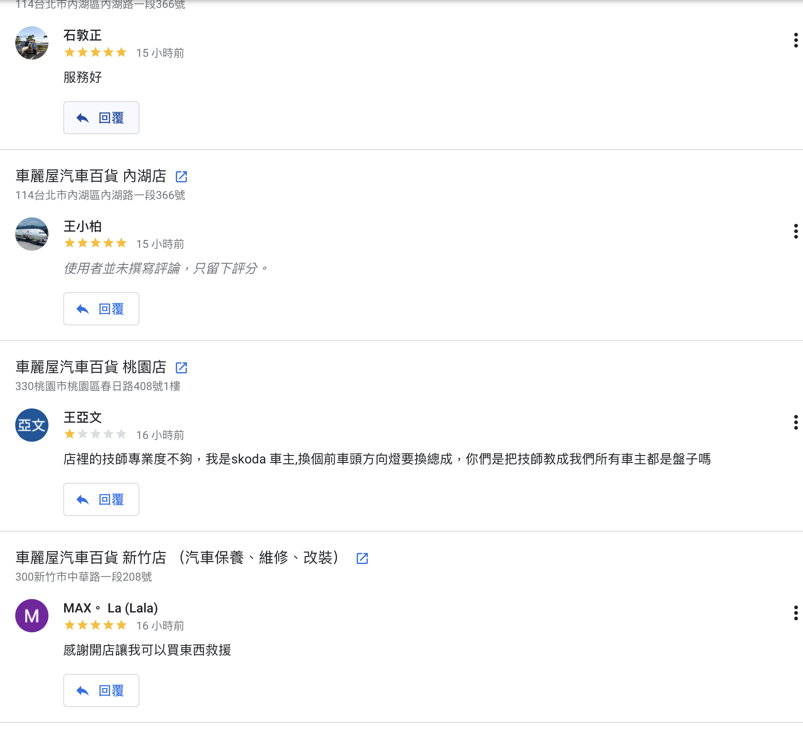
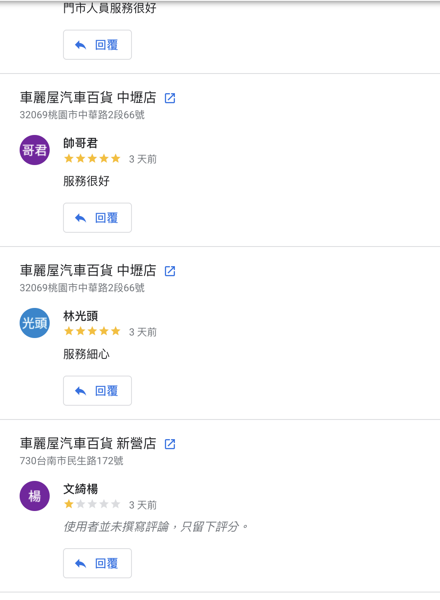

Google Maps 評論自動回覆 + 客訴追蹤系統提案
消費者在購物前會 Google 搜尋查看評價
消費者購買前會看評論來判斷商家信譽
在 4 小時內回覆，挽回不滿客戶的機率提高
潛在客戶認為「不回覆負評 = 商家不在乎」
以每位客戶年均消費 $2,000 計算，一則負評的潛在損失超過 $60,000
來源：Kenect 線上評論影響研究
回覆所有評論的企業，營收平均高出 18%
星等提升 0.5 星，門市營收平均增加 20%
我們分析了車麗屋全台 33 間門市的 Google Maps 評論數據。以下是現況：


| 排名 | 門市 | 星等 | 評論數 |
|---|---|---|---|
| 1 | 八德店 | 4.5 | 3,472 |
| 2 | 蘆洲店 | 4.5 | 3,419 |
| 3 | 基隆店 | 4.6 | 3,279 |
| 4 | 內湖店 | 4.4 | 3,240 |
| 5 | 中壢店 | 4.6 | 3,111 |
| 6 | 板橋店 | 4.2 | 3,059 |
| 7 | 楊梅店 | 4.8 | 2,966 |
| 8 | 新營店 | 4.8 | 2,820 |
| 9 | 台中崇德店 | 4.4 | 2,504 |
| 10 | 鳳山店 | 4.3 | 2,389 |
| 門市 | 星等 | 評論數 | 風險 |
|---|---|---|---|
| 板橋店 | 4.2 | 3,059 | 評論多 + 星等低 |
| 土城店 | 4.2 | 2,306 | 星等偏低 |
| 新店中興店 | 4.2 | 595 | 星等偏低 |
| 嘉義店 | 4.2 | 277 | 星等偏低 |
汽車百貨有明顯的淡旺季週期。依產業特性，年前保養潮、暑假出遊季、年底保養為三大旺季，評論量會大幅波動：
| 月份 | 產業特性 | 類型 |
|---|---|---|
| 1月 | 年前保養潮，進廠量大增 | 旺季 |
| 2月 | 農曆年休假，來客數下降 | 淡季 |
| 4月 | 年後消費趨緩 | 淡季 |
| 7-8月 | 暑假出遊前車輛檢查高峰 | 旺季 |
| 9月 | 開學後消費收斂 | 淡季 |
| 11-12月 | 年底保養 + 年終預算消化 | 旺季 |
* 淡旺季分類依汽車後市場產業週期特性推估，實際評論量波動可從 Google 商家檔案後台取得精確數據。
請一個行政人員，月薪 $33,000（實際雇用成本 $49,500）是固定支出。
旺季評論量暴增，一個人根本做不完。淡季來客量下降，人還是要付全薪。
自動化不受季節影響。旺季淡季成本一樣，AI API 費用每月不到 $1,000 台幣。
計算基準：行政人員月薪 $33,000，加上勞保雇主負擔（約 11%）、健保雇主負擔（約 5%）、勞退 6%、年終獎金（攤提約 8.3%），實際雇用成本約為月薪的 1.5 倍 = $49,500/月，時薪 $281
| 項目 | 數量 | 每則耗時 | 月合計 |
|---|---|---|---|
| ≥3★ 回覆（佔 90%） | 460 則 | 3.5 分鐘 | 1,610 分鐘 |
| <3★ 處理（佔 10%） | 51 則 | 15 分鐘 | 765 分鐘 |
| 追蹤 + 報表 | — | — | 480 分鐘 |
| 月合計 | 2,855 分鐘 = 47.6 小時 |
* 月均評論量以多種方式交叉估算：實測單日觀測、累計評論數反推、同業基準比對（每店約 15-20 則/月）。精確數據可從 Google 商家檔案後台驗證。
| 項目 | 現況 | 自動化後 | 省下 |
|---|---|---|---|
| ≥3★ 回覆 | 3.5 min/則 | 0 min（AI 全自動） | 1,610 min |
| <3★ 處理 | 15 min/則 | 7 min（AI 寫草稿，人只做聯繫） | 408 min |
| 追蹤 + 報表 | 8 hr/月 | 0（系統自動） | 480 min |
| 月合計 | 47.6 小時 | 6.0 小時 | 41.6 小時（省 87%） |
請人的風險
自動化沒有這些問題
系統每小時自動掃描 33 間門市的新評論
≥3★ AI 自動回覆 ｜ <3★ AI 先回覆安撫 → 人工聯繫處理 → 系統追蹤結案
根據評論內容客製化回覆，像真人一樣自然。
完全不需要人工介入。
AI 先發公開回覆安撫情緒，同時通知店長 24hr 內私下聯繫處理。
24hr 未處理自動提醒｜72hr 未處理升級通知區督導｜每月自動產出報表
| 顧問研調費 門市數據分析、流程設計、風險評估（$3,000/hr × 8hr） |
市價 $24,000
住宿折抵
|
| 提案報告 含數據分析報告 + 系統架構設計 |
市價 $30,000
車輛使用權折抵
|
| 系統建置費（一次性） 系統設計 + 開發 + 測試 + 33 店上線 |
$45,000 |
| 上線後二擇一： | |
| 方案 A — 我們維護 系統監控、prompt 調整、月報產出、bug 修復 不含客製化需求，新功能另外報價 |
$6,000/月 |
| 方案 B — 車麗屋自行維護 2 場教育訓練 × 3 小時，教資訊部接手維運 |
$18,000（一次性） |
| 月薪 $33,000 + 勞健保年終 | $49,500/月 |
| 年度人事成本 | $594,000/年 |
| 還不含招募成本、培訓時間、離職風險，旺季一個人也做不完。 | |
| 第一年投入（建置 $45,000 + 維護 $72,000） | $117,000 |
| 系統運行成本（n8n 主機 + AI API，約 $1,000/月） | $12,000/年 |
| 請人一年的成本 | $594,000 |
| 比請人省下 | $465,000/年 |
| 自動化每年省下的人力成本 | $140,376 |
| 扣除系統運行成本 | -$12,000 |
| 第一年淨賺 | $11,376 |
| 第二年起每年淨賺 | $56,376 |
系統運行成本包含：n8n 主機（自架或雲端）約 $500/月 + Claude AI API 約 $500/月（以 Haiku 模型計算）
選一間門市跑兩週，驗證以下流程：
這個階段完全免費，不滿意不收費。
Pilot 通過後，擴展到全部 33 間門市：